About me
I grew up in the Bay Area. I’m finishing a Business Management Economics degree at UCSC along with an Innovation and Entrepreneurship certificate through Crown.
Using the latest tech to make life easier for small business owners.
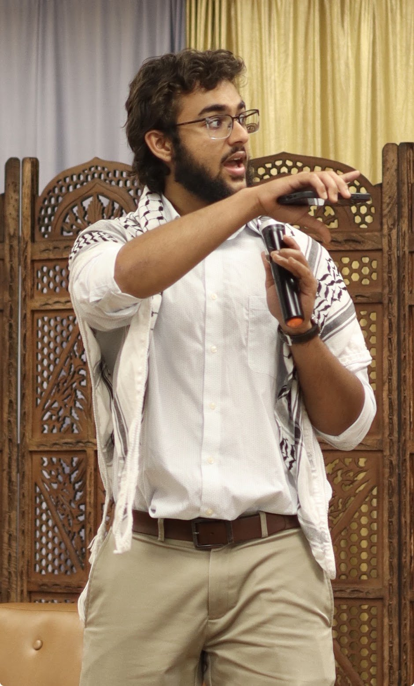
I grew up in the Bay Area. I’m finishing a Business Management Economics degree at UCSC along with an Innovation and Entrepreneurship certificate through Crown.
I co-founded Koro, an AI automation company working with small businesses around the Bay. I do the business development side: talking to owners, figuring out what’s actually costing them time, and building around that.
I learned that the hard way. My first attempt was a website business, and someone told me flat out: you’re building a solution before you’ve found a problem. That stuck. Now the first step is always listening.
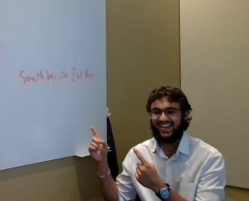
I’m president of the MSA at UCSC, which means running events, speaking, and a lot of logistics. I also volunteer with different organizations to support local communities.
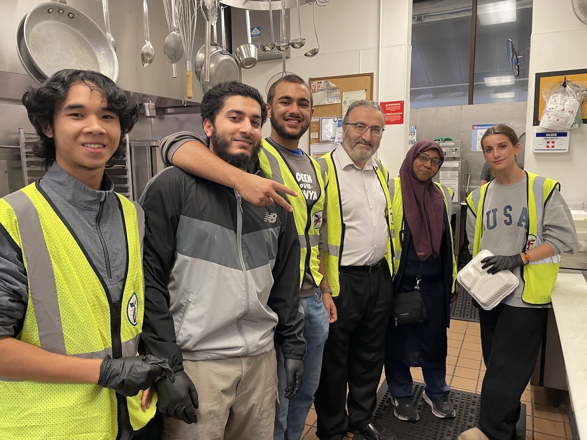
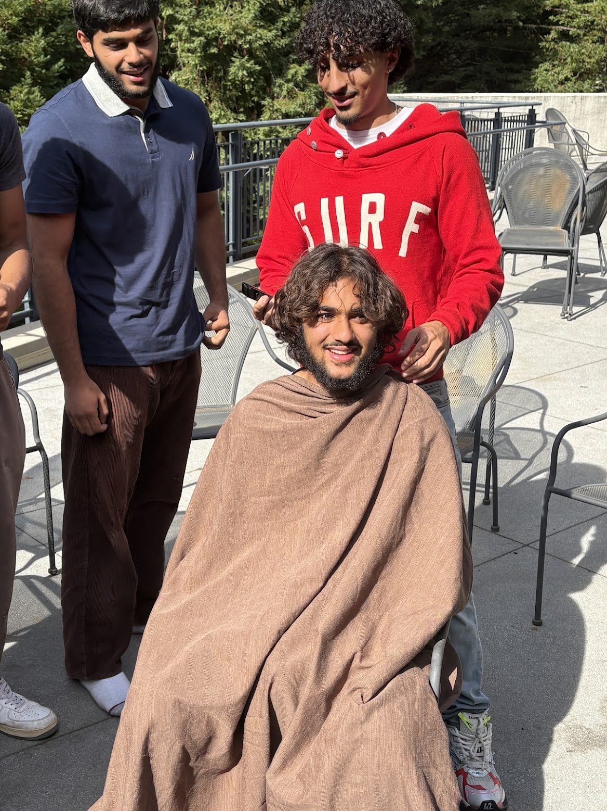
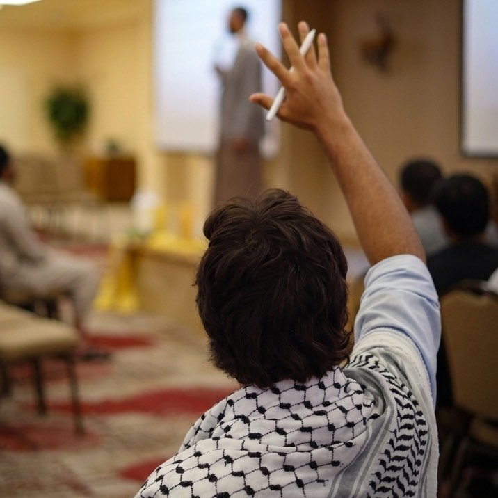
I love to cook and bake, and to host a bunch of people. I’ve also recently taken up archery and hiking.
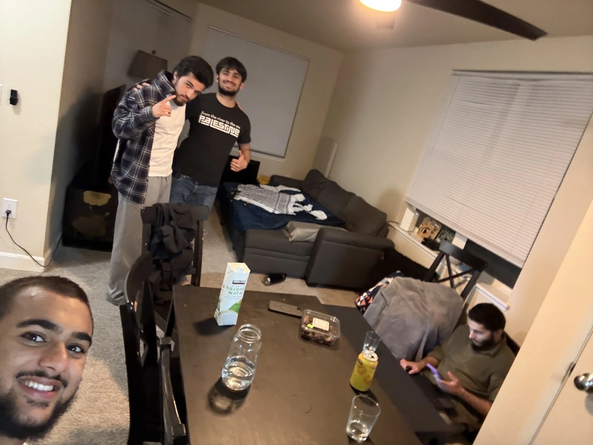
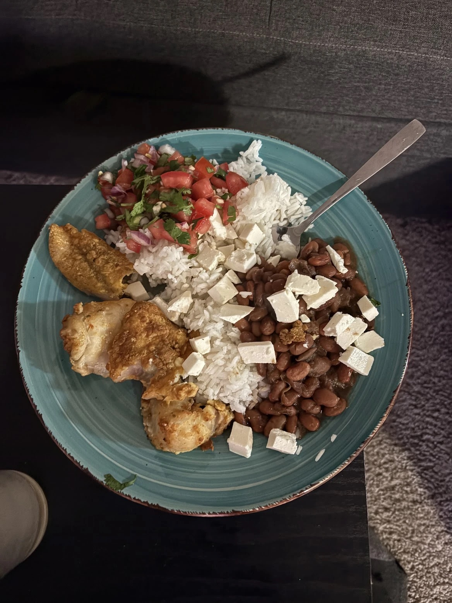
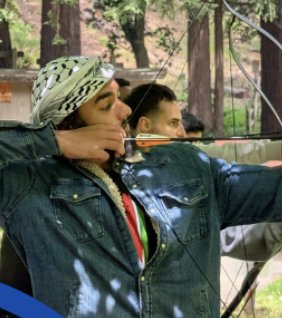
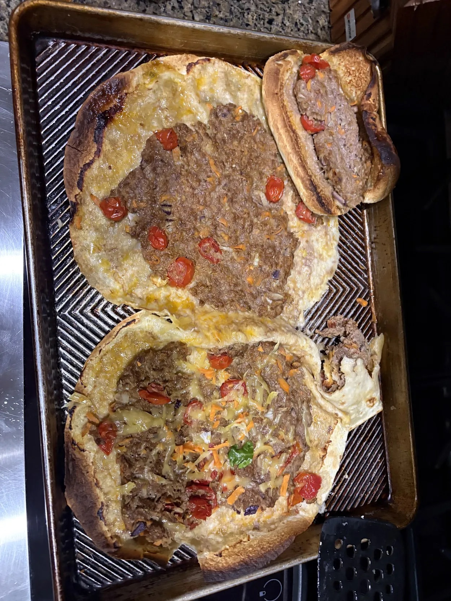
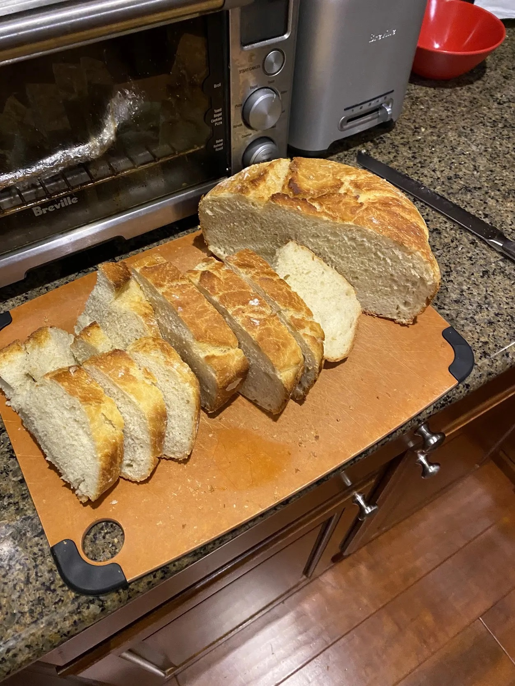
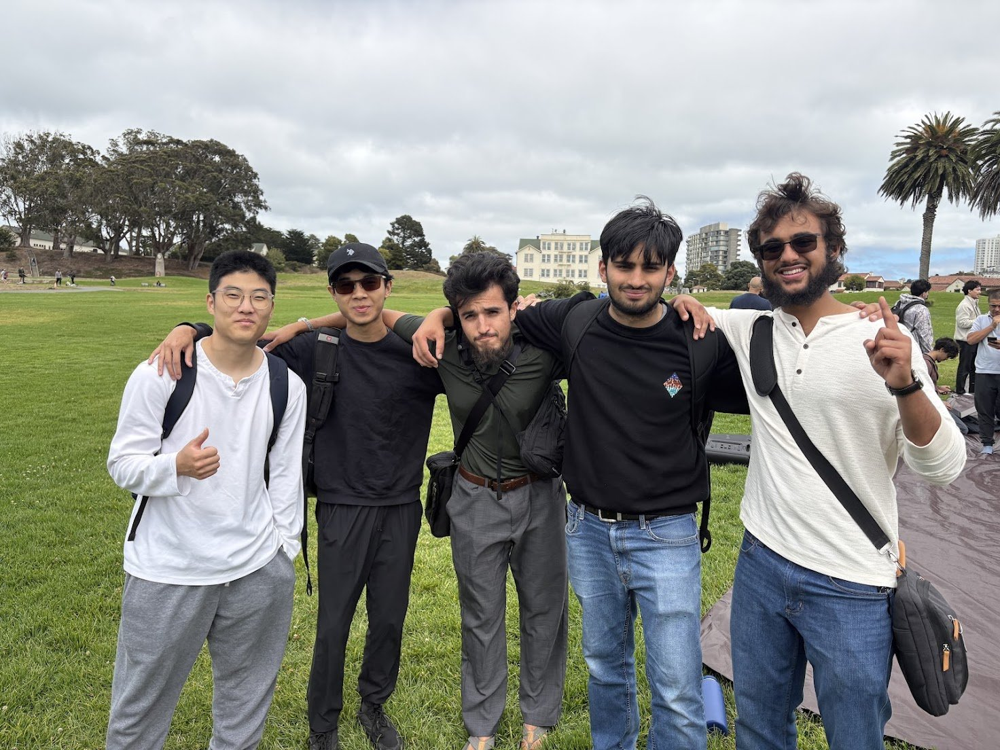